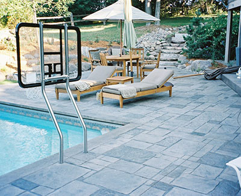

With over 35 years of experience, Lowell Russell Concrete, a family-owned company, continues to stretch the application and design boundaries of decorative concrete. Serving Lakeville, Minnesota, we have continually been recognized by the Better Business Bureau and Angie’s List as offering excellent customer satisfaction. The modern techniques and equipment we utilize help to continually expand our knowledge and expertise. Because of our dedication, we offer the highest quality exterior and interior concrete products and services available.
Exterior Concrete Lakeville
For years, concrete has earned a reputation as a strong and durable material for everything from patios to driveways and sidewalks. Rightfully so. A well-formulated and properly poured concrete patio can last for many years and look nearly identical to when it was poured. Unfortunately, in the past, when people hear “Concrete” they conjure images of your typical gray slab. And although sometimes that’s exactly what you want, it can be so much more. Concrete can be more than durable. Concrete can be beautiful. It can be stunning.
Architectural concrete, as a low-cost alternative, presents homeowners with significant savings for large areas, such as driveways and patios, as well as steps, walkways and pools. Not only is concrete less expensive, but the decorative designs, borders and colors possible with architectural concrete will enhance your home and add to its value.
Concrete Patio Lakeville
Your concrete patio should be open and inviting. At Lowell Russell Concrete we can assist you in making your concrete patio space in Lakeville be both. Your ideas and our know-how can create a space great for entertaining guests and also your sanctuary from the stresses of your life. We know that your project is unique, challenging and important; because of that, we would like to offer our help. Please contact a professional from Lowell Russell Concrete, a Minnesota based family owned business, to find out how our services can to create a patio where you can enjoy what you have helped to create.
Concrete Pool Lakeville
Very few investments make a statement like a concrete pool. Indoor or outdoor, your Lakeville pool area should be uniquely your own. Make it happen with Lowell Russell’s stamped concrete and border designs. Your investment is worth too much to not use the best. We know that your project is unique, challenging and important; because of that, we would like to offer our help. Please contact a professional from Lowell Russell Concrete, a Minnesota based business, to find out how our services can to create a pool area that will not only look great but will be durable for years to come.
Concrete Driveway Lakeville
Your driveway is your home’s first impression. Lowell Russell Concrete understands that. We can create a high quality concrete driveway in Lakeville that is not only functional but visually appealing. Please contact a professional from Lowell Russell Concrete to find out how our services can to create a driveway that is unique, artistic and above all durable…even in Minnesota’s extreme weather.
Concrete Steps & Walkways Lakeville
Whether straight, round, steep or stretched, Lowell Russell Concrete can create high quality, cost effective concrete steps and walkways that do more than just make a path to your front door. Create an entrance to your home or business that makes the walk up both impressive and inviting.
Interior Concrete Lakeville
Lowell Russell Concrete of Lakeville has engineered systems that allow the creation of beautiful and unique architectural concrete floors for new home construction or renovation projects.
No interior flooring is as flexible and durable as concrete. Concrete floors can be as cozy as carpet. They can be as classy as hardwood. And concrete will remain beautiful long after those other materials have frayed or faded. When done right, concrete is stunning and durable and easy to clean and maintain. It should be the first option when you think of interior flooring.
Unique, colored variegated or translucent effects are achievable with chemical staining. Complementing the most contemporary decor, individualistic theme or traditional design, Lowell Russell Concrete systems offer value with virtually limitless potential for design with remarkably diverse range of style applications. Materials such as terrazzo, slate, hardwood, or imported tile can be replicated on moderate budgets.
Concrete Staining Lakeville
Chemstaining is a ready to use, penetrating acidic stain that chemically reacts with cured concrete to produce permanent, variegated or translucent effects. Chemical Staining allows for more creative and artistic designs to be possible. They can be used to simulate other products; such as tile, wood, and stone; and create original designs never before imagined with concrete. It brings the durability and strength of concrete to table, countertops, entryways, and decks which concrete would usually not be a consideration. The flexibility to give a new look to old concrete without the major undertaking of the tear out.
Concrete Floor Lakeville
Concrete is the new building material of choice for home designers and owners throughout the country. Because concrete floors can be stained, colored, painted, and personalized, they are universally popping up in business and home décor. Nearly limitless in design, color and texture, a concrete floor in Lakeville offers numerous options for exterior and interior areas.
Currently, the most common place you’ll find decorative concrete is under your feet. Whether it’s acid-stained, painted, created with overlays, stencils, radiant floors, you’re your unique personal floor, concrete floors offer design and functionality unlike any other material. Concrete flooring, often referred to as cement flooring, does not need to be boring and gray. Modern techniques can bring new life to this traditional substrate.
Lakeville MN Community Profile
Staincrete is proud to offer its decorative concrete services to the people of Lakeville Minnesota. We thought you might like to know a bit more about this interesting and vibrant community.
History of Lakeville
After the Treaty of Traverse de Sioux was ratified in 1851, a military road was established n between the southern forts and Fort Snelling. JJ Brackett, a Saint Paul lumber businessman and mail carrier platted a site halfway between Saint Peter and Saint Paul. The area established in 1858 was Lakeville Township. Due to the mostly rural landscape, the early settlers to the town were mostly farmers. Most were Scandinavian and another group composed of English, Scots and Irish also settled in the area. Incorporation to cityhood was achieved in 1967.
Demographics
| Statistic | Lakeville | Minnesota | National |
| Population | 57,715 | 5,383,661 | 314,107,084 |
| Population density (sq mi) | 1,601 | 67 | 91 |
| Median age | 35.1 | 37.6 | 37.4 |
| Male/Female ratio | 1.0:1 | 1.0:1 | 1.0:1 |
| Married (15yrs & older) | 67% | 58% | 55% |
| Speak English | 92% | 89% | 79% |
| Speak Spanish | 3% | 4% | 13% |
- The average age in Lakeville is 7% lower than the state
- 75% of the population in the city is Caucasian
- 86% of the population is African-American
- 55% of the population is Asian
Lakeville MN Cost of Living
| Index | Lakeville | Minnesota | National |
| Cost of living index | 113 | 102 | 100 |
| Index | Lakeville | Minnesota | National |
| Goods & Services index | 108 | 106 | 100 |
| Groceries index | 106 | 105 | 100 |
| Health care index | 106 | 110 | 100 |
| Housing index | 133 | 101 | 100 |
| Transportation index | 101 | 98 | 100 |
| Utilities index | 96 | 91 | 100 |
- The cost of living in Lakeville is 11% higher than the Minnesota average.
- The cost of living in Lakeville is 13% higher than the national average.
- The cost of housing in Lakeville is 33% higher than the national average.
In the event that the cost of living data was unavailable for this city, estimates based upon nearby cities were used. Each cost of living index is based on a national average of 100. If the amount is below 100, it is lower than the national average. If the amount is above 100, it is higher than the national average.
Schools in Lakeville
There are three independent school districts that serve the needs of the city and these are Independent School District 196, Farmington School District 192 and Lakeville Area School District 194. Just recently a second high school was opened in 2005 called Lakeville South. Due to Minnesota’s open enrollment statute many students attend school in different districts. There are 8 elementary schools and 3 middle schools in the city.
Places of Worship
Here are some of the places of worship in Lakeville MN:
- All Saints Catholic Church
- Celebration Church
- Christiania Lutheran Church
- Cross of Christ Comm Church
- Family of Christ Lutheran Church
- Hope Community Church
- Hosanna Lutheran Church
- Livingwaters Church
- Messiah Lutheran Church
- Minnesota Valley Free Lutheran Church
- Bethlehem Lutheran Church
- Spirit of Joy Christian Church
Businesses Based in Lakeville, MN
The top businesses in Lakeville are in the retail industry. Here are some of the companies that are hiring people:
- Best Buy
- CVS Pharmacy
- Fastenal
- Staples
- Rite Aid
- Home Depot
- Walgreens
- Ross Stores
- Walmart
- Foot Locker
The most popular job groups in the city are in the fields of management, business, sales and office, Science and arts. The most common industries in the city by employee number are retail trade, healthcare, manufacturing and social assistance.
Restaurants & Nightlife
Porterhouse Steak and Seafood Restaurant – Definitely the best restaurant in the city, most reviews is by word of mouth. They serve the best steaks in the city. Do try the lobsters as well. Local favorites are the scallop appetizer, soups, salad and your choice of steak. Service is amazing and the steaks are cooked to perfection as ordered.
Lakeville Brewing Company Restaurant — This is the place to go for great food and beer. The place has a nice ambience both inside and out. Do try the Reuben Nachos, as they are definitely delicious.
Harry’s Café Restaurant – The restaurant offer a wide selection of meals. The sandwiches are absolutely amazing. Do check out the cheese quesadilla and try the garlic fries with sour cream dipping sauce.
Fun Things to Do In Lakeville
The city maintains 62 public properties which include neighborhood and community parks as well as athletic fields, walking and hiking trails as well as nature areas and public fishing areas too.
Some of the places to check out in the city include:
- Lakeville Area Arts Center
- Aronson Park
- Antlers Park
- King Park
- Valley Lake Park
- Ritter Farm Park
- North Park
Lakeville Minnesota truly is a great place. If you’d like to talk know more about our concrete flooring services in Lakeville, give us a call. We can’t wait to meet you.


{kind=link}
{kind=link}